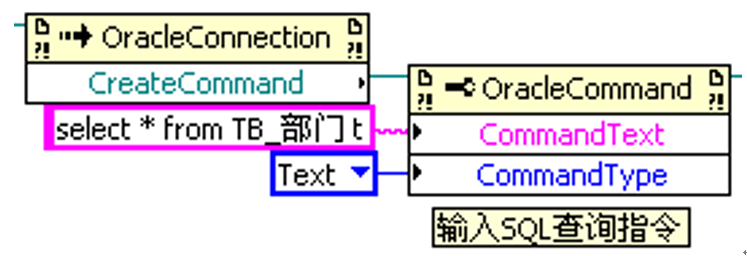

不安装客户端连接ORACLE数据库
原创作者：王永建(blog@wangyongjian.cn)
原文引用地址：blog.wangyongjian.cn
本文主要介绍了在不安装Oracle数据库客户端的情况下连接远程端的Oracle数据库服务器，可做为日常开发参考。不安装客户端可以避免因客户端的配置不当造成连接的失败，因为不需要安装数据库客户端，可以减少软件安装部署时间，减少软件安装后的设置步骤，提高使用效率，降低安装部署难度。
Oracle提供了多种方式用于连接本地或远程端的Oracle数据库服务器，大体看分为一下几种形式：
1 安装Oracle数据库服务端
Oracle官方提供完整的客户端安装包，体积很大，数据库客户端除了可以连接远程数据库以外，还包含 SQL Plus、JDBC Driver、ODBC Driver、Pro*C SDK、Net Configuration Assistant、Net Manager、和其他小工具（tnsping, sqlldr, exp, emp，xml 等），可以说是一个高度功能齐备的客户端管理工具。
文件体积大，安装繁琐，需要配置，适合于数据库的开发使用；
2 即时客户端
官方提供的精简客户端。利用即时客户端，无需安装标准的 Oracle 客户端或拥有 ORACLE_HOME 就可运行应用程序。OCI、OCCI、ProC、ODBC 和 JDBC 应用程序无需进行修改即可运行，同时使用的磁盘空间显著比以前少。甚至 SQLPlus 也可以与即时客户端一起使用。无需重新编译，也就没有烦恼。可以通过将即时客户端与应用程序打包在一起，为客户省去了安装和配置 Oracle 客户端的额外步骤，也无需担忧其他的安装事项。
体积较客户端小巧，可以可安装程序打包，需要对操作做简单的配置；
3 Oracle 调用接口
Oracle 调用接口 (OCI) 是最全面、性能最高、基于原生“C”语言的 Oracle 数据库接口，它可以提供 Oracle 数据库的全部功能。OCI 为构建各种语言专用接口提供了基础。各种领先的开源接口也都使用OCI。作为对 Oracle 数据库的原生接口，OCI 还对 Oracle 数据库核心内部发出的查询、语句和调用进行了增强。各种 Oracle 工具也都是基于 OCI。
功能最强大，直接引用DLL库进行底层开发，执行效率高，但开发难度大，开发周期长；
4 采用ODP.NET接口
在Oracle的官方网站是这样描述的：Oracle Data Provider for .NET (ODP.NET) 优化了通过 ADO.NET 访问 Oracle 数据库中数据的过程。ODP.NET 允许开发人员利用高级的 Oracle 数据库功能。这个数据提供程序可与最新的 .NET Framework 版本 4 结合使用。ODP.NET 使得从 .NET 中使用 Oracle 变得更灵活、更快速和更稳定。ODP.NET 包含许多其他 .NET 驱动程序所没有的特性，包括原生 XML 数据类型、自调优、RAC 优化的连接池、可提升的事务以及 Advanced Queuing。
应用简单，部署方便，可直接在VS环境中直接应用，系统部署简单。
以上是Oracle官方提供的数据库连接方式，其他系统提供的连接方式都是基于上述集中基础接口而做的封装。要使应用程序操作数据库达到预期的响应性能和高级数据库特性，应该选择 Oracle 专用的连接而第三方封装后的数据库连接方式。
本文以在LabVIEW开发环境中调用Oracle ODP.NET组件为例说明如何在不安装客户端的情况下连接远程端的Oracle数据库服务端，并进行相应的数据操作。
1、引用ODP.NET组件
在Oracle官方提供的文件说明提到，安装ODP.NET需要下载ODAC，在ODAC中包含对应版本的ODP.NET的组件库，然后添加一个对 Oracle.DataAccess.DLL 的引用即可。
Oracle.DataAccess.DLL是一个非托管的.net组件库，其需要oci.dll调用接口的支持才能工作，在使用过程中其实是需要对权限、PATH环境路径等进行设置，并需要若干组件的支持，这些在官方的使用文档中并没有提起，在使用上为遇到障碍。
其实在ODAC的安装包里还包含了官方文件中没有明确指明的.net库文件,Oracle.ManagedDataAccess.dll这是一个.net托管的数据库操作组件，这个组件不依赖与其他接口文件，只需Oracle.ManagedDataAccess.dll一个组件库文件即可使用，另外Oracle.ManagedDataAccess.dll的编译目标平台是Any CPU，及可以运行在任何具有.net运行环境的系统中，不管是32位系统还是64系统。在这里我们直接在LabVIEW中加载Oracle.ManagedDataAccess.dll的引用。
首先需要在LabVIEW程序程序面板创一个.net组件节点（构造器） ，然后执行选择.net构造器的操作，在选择构造器的窗口中，由于我们没有把Oracle.ManagedDataAccess.dll放入系统的GAC中，在组件选择下拉列表中是看不到的，需要浏览操作，指定Oracle.ManagedDataAccess.dll的存放路径。选择OracleConnection对象下的OracleConnection(String ConnectionString)创建构造函数。
2、 创建并打开一个数据库连接
通过上一步操作后即可使用 OracleConnection object 建立对数据库的一个连接，这个方法中通过指定数据库连接字符串即可与数据库连接连接，连接字符串格式为：“Data Source=服务器地址：端口/数据库名（或者直接用自己配置好的服务命名）;User=登录用户名;Password=登录密码;”
例如：
Data Source=10.1.1.13:1521/orcl;User ID=htmes;Password=htmes;
3、打开数据库
通过OracleConnection对象下的Open方法可以打开数据库。
4.、 输入SQL指令
通过Open方法打开数据库后，在执行SQL指令对数据库进行操作前需要创建一个 OracleCommand 对象（该对象与已创建的 OracleConnection 对象相关联）。在创建 OracleCommand 对象的时侯，需要提供带有两个参数。第一个是要执行的 SQL 指令；可以是用字符串所写的任意有效的 SQL 语句。。第二个参数是SQL的指令类型。 
5.、执行SQL指令
在4中只是完成了SQL的处理，实际并没有执行，要执行SQL还要执行ExecuteNoquery（）或者ExecuteReader（）方法后SQL指令才会真正的被执行。ExecuteNoquery（）和ExecuteReader（）区别在于ExecuteNoquery（）用于不需要数据库返回数据的INSERT、UPDATE、DELETE等操作，ExecuteReader（）用于执行SELECT需要从数据库返回查询结果的操作。
6、 关闭连接
执行完SQL相应操作后需要关闭引用，释放资源。
本文通过在LabVIEW中直接引用Oracle.ManagedDataAccess.dll实现了在不要安装Oracle数据客户端的情况下即可做远程或者本地数据库进行操作，且无需进行任何配置，且Oracle.ManagedDataAccess.dll可以随LabVIEW应用程序自动打包，无需部署。 附一次完成读操作过程